Soru 1Cevap: C
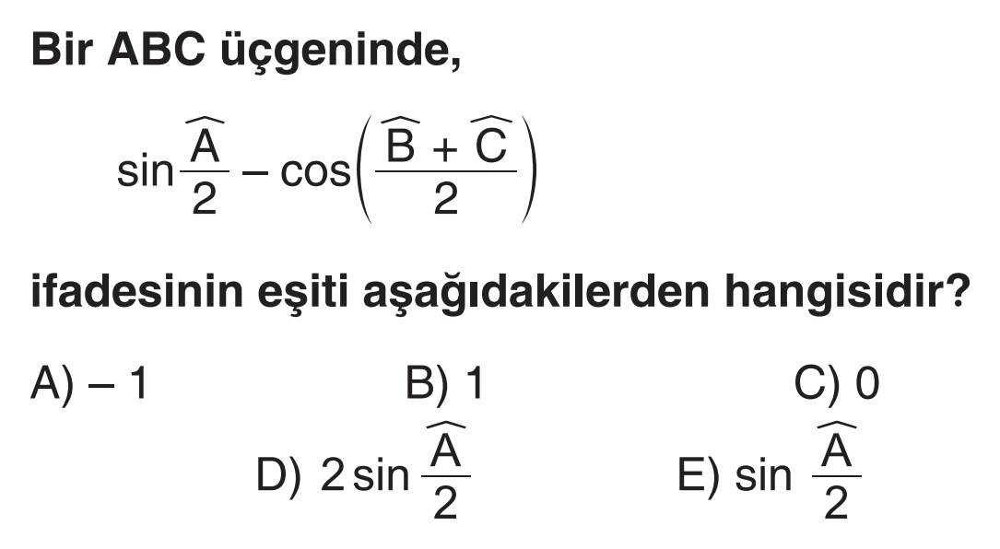
Çözüm
- Üçgende $\frac{B+C}{2} = 90^\circ - \frac{A}{2}$.
- $\cos\left(90^\circ - \frac{A}{2}\right) = \sin\frac{A}{2}$.
- $\sin\frac{A}{2} - \sin\frac{A}{2} = 0$.
Cevap: C
Soru 2Cevap: C
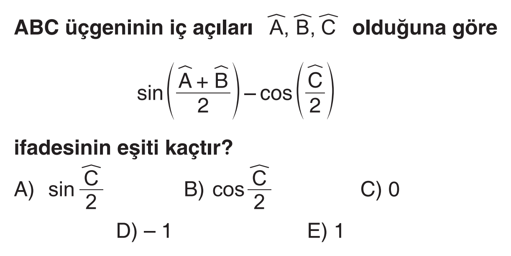
Çözüm
- $\frac{A+B}{2} = 90^\circ - \frac{C}{2}$.
- $\sin\left(90^\circ - \frac{C}{2}\right) = \cos\frac{C}{2}$.
- $\cos\frac{C}{2} - \cos\frac{C}{2} = 0$.
Cevap: C
Soru 3Cevap: D
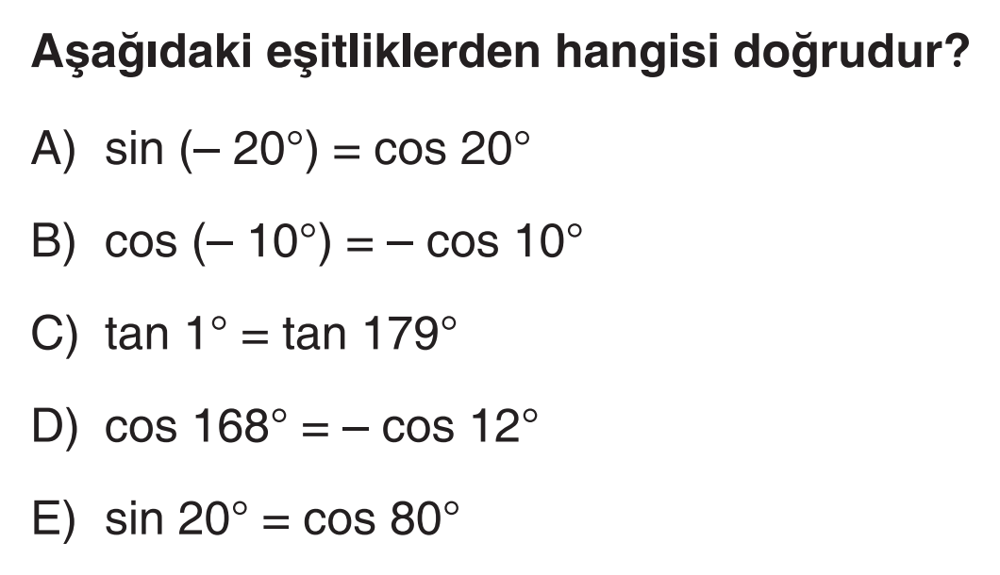
Çözüm
- $\cos(180^\circ - x) = -\cos x$.
- $\cos168^\circ = \cos(180^\circ - 12^\circ) = -\cos12^\circ$ ✓.
- Diğerleri: $\sin(-20^\circ) = -\sin20^\circ$, $\cos(-10^\circ) = \cos10^\circ$, $\tan179^\circ = -\tan1^\circ$, $\sin20^\circ = \cos70^\circ$ → yanlış.
Cevap: D
Soru 4Cevap: D
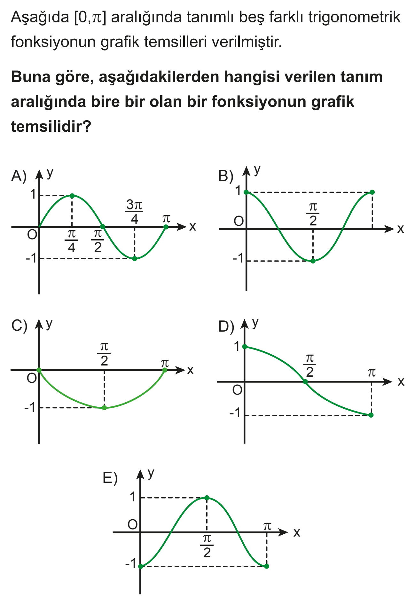
Çözüm
- Bire bir fonksiyonda farklı x'ler farklı y'lere gider (yatay doğru grafiği en çok bir kez keser).
- A, B, C, E'de aynı y değeri iki kez alınır.
- D sürekli azalan → bire bir.
Cevap: D
Soru 5Cevap: A
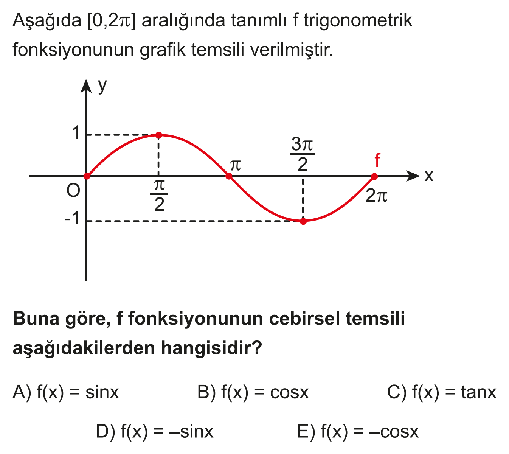
Çözüm
- $f(0) = 0$, $f\left(\frac{\pi}{2}\right) = 1$.
- $f(\pi) = 0$, $f\left(\frac{3\pi}{2}\right) = -1$, $f(2\pi) = 0$.
- Bu değerler $\sin x$'e aittir.
Cevap: A
Soru 6Cevap: A
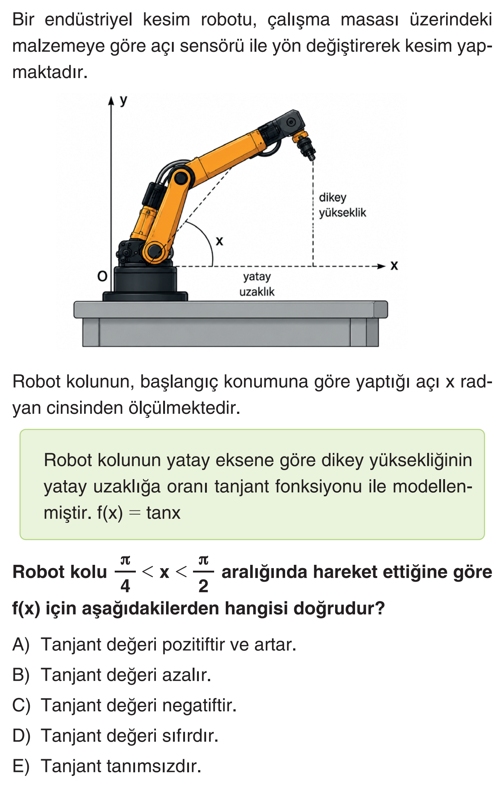
Çözüm
- $\left(\frac{\pi}{4}, \frac{\pi}{2}\right)$ I. bölgededir → $\tan x > 0$.
- Tanjant bu aralıkta artandır ($\tan\frac{\pi}{4} = 1$'den büyür).
- Tanjant değeri pozitif ve artar.
Cevap: A
Soru 7Cevap: D
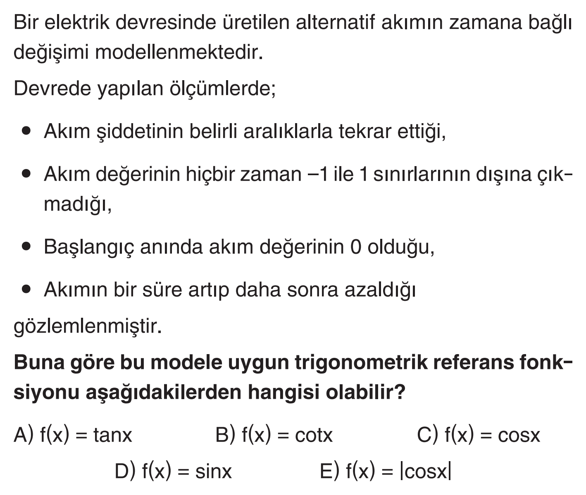
Çözüm
- Değerler $[-1,1]$'de → $\sin$ ya da $\cos$ (tan, cot sınırsız).
- Başlangıçta değer 0 → $\cos0 = 1$ olduğundan cos olamaz.
- Önce artıp sonra azalan, $f(0) = 0$: $\sin x$.
Cevap: D
Soru 8Cevap: C
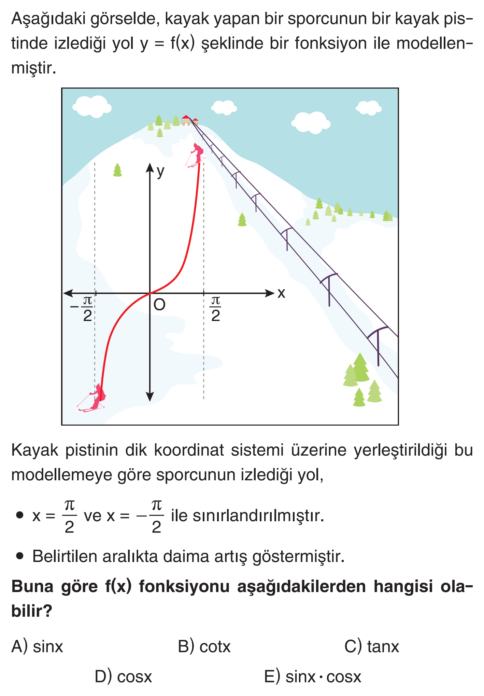
Çözüm
- Yol $x = \pm\frac{\pi}{2}$ dikey doğrularıyla sınırlı → bu değerlerde tanımsız.
- Aralıkta daima artan ve orijinden geçen.
- $\tan x$.
Cevap: C
Soru 9Cevap: B
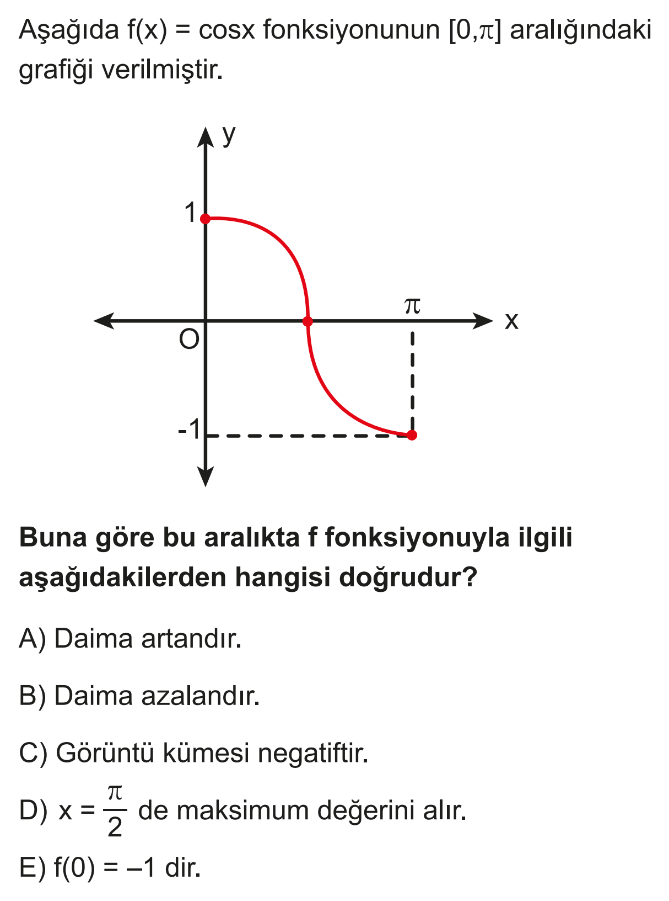
Çözüm
- Grafik $(0,1)$'den $(\pi,-1)$'e sürekli iner.
- Görüntü kümesi $[-1,1]$; maksimum $x = 0$'da; $f(0) = 1$.
- Doğru ifade: daima azalandır.
Cevap: B
Soru 10Cevap: E
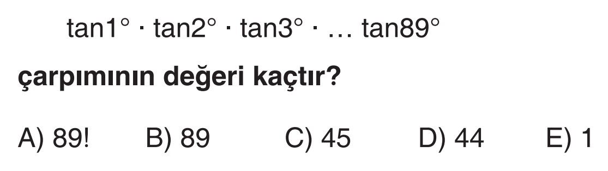
Çözüm
- $\tan k^\circ\cdot\tan(90^\circ - k^\circ) = \tan k^\circ\cdot\cot k^\circ = 1$.
- $(1, 89), (2, 88), …, (44, 46)$ eşleşir; her çarpım 1.
- Ortada $\tan45^\circ = 1$ kalır; sonuç 1.
Cevap: E
Soru 11Cevap: D
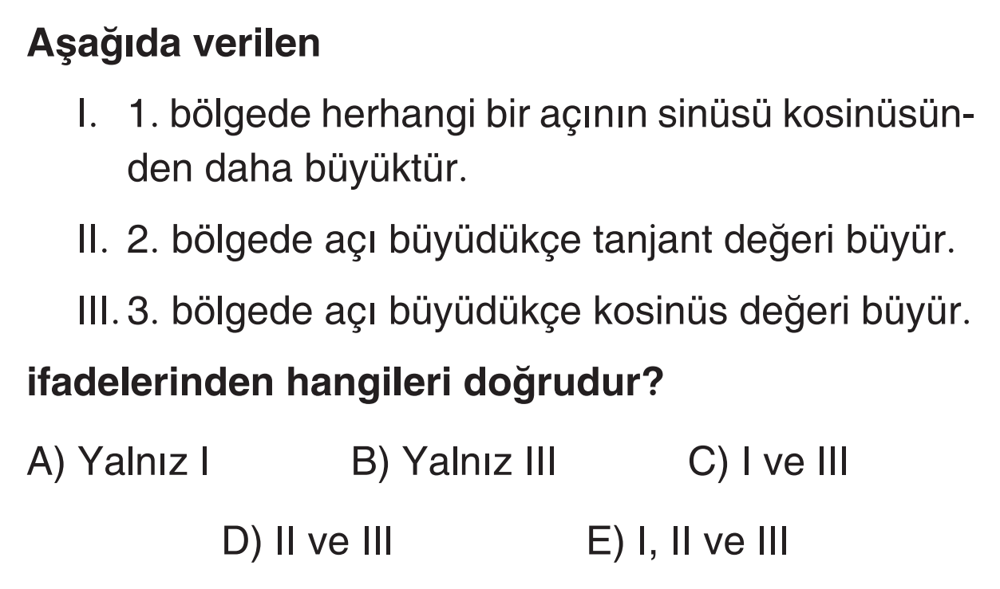
Çözüm
- I: $30^\circ$ için $\sin30^\circ < \cos30^\circ$ → yanlış.
- II: tanjant her bölgede artandır → doğru.
- III: III. bölgede kosinüs $-1$'den $0$'a artar → doğru. II ve III.
Cevap: D
Soru 12Cevap: A
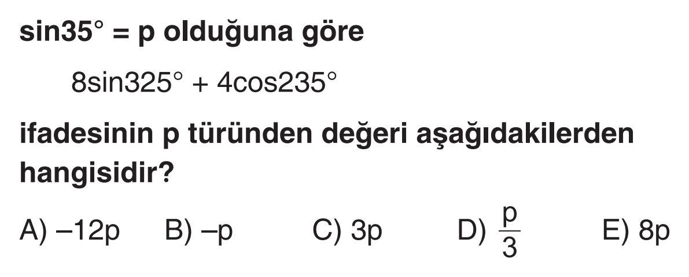
Çözüm
- $\sin325^\circ = -\sin35^\circ = -p$.
- $\cos235^\circ = -\cos55^\circ = -\sin35^\circ = -p$.
- $8(-p) + 4(-p) = -12p$.
Cevap: A
Soru 13Cevap: D
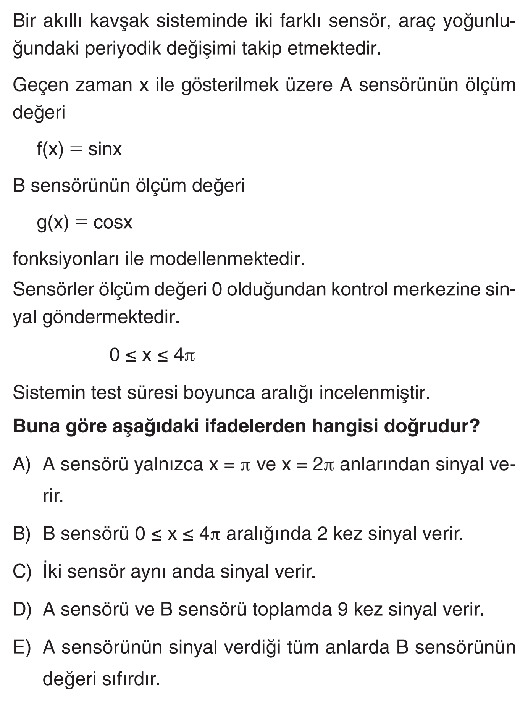
Çözüm
- $\sin x = 0$: $x = 0, \pi, 2\pi, 3\pi, 4\pi$ → A 5 kez sinyal verir.
- $\cos x = 0$: $x = \frac{\pi}{2}, \frac{3\pi}{2}, \frac{5\pi}{2}, \frac{7\pi}{2}$ → B 4 kez.
- Toplam 9 sinyal (aynı anda sıfır olmazlar).
Cevap: D
Soru 14Cevap: D
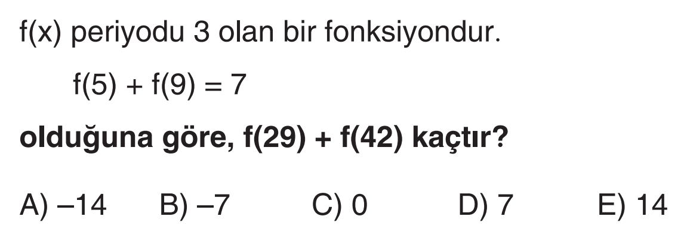
Çözüm
- Periyot 3: $f(29) = f(29 - 24) = f(5)$.
- $f(42) = f(42 - 33) = f(9)$.
- $f(29) + f(42) = f(5) + f(9) = 7$.
Cevap: D
Soru 15Cevap: C
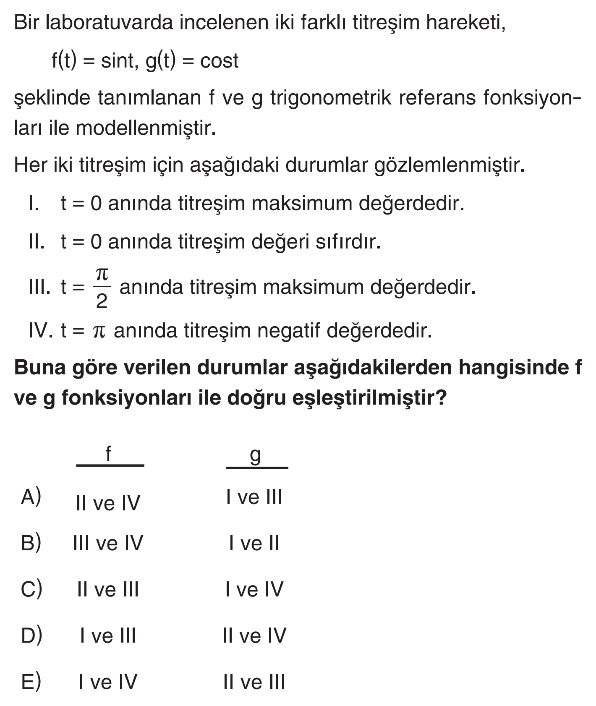
Çözüm
- $t = 0$: $\sin0 = 0$ (II f için), $\cos0 = 1$ maksimum (I g için).
- $t = \frac{\pi}{2}$: $\sin = 1$ maksimum (III f için).
- $t = \pi$: $\cos\pi = -1$ negatif (IV g için). f: II, III; g: I, IV.
Cevap: C
Soru 16Cevap: E
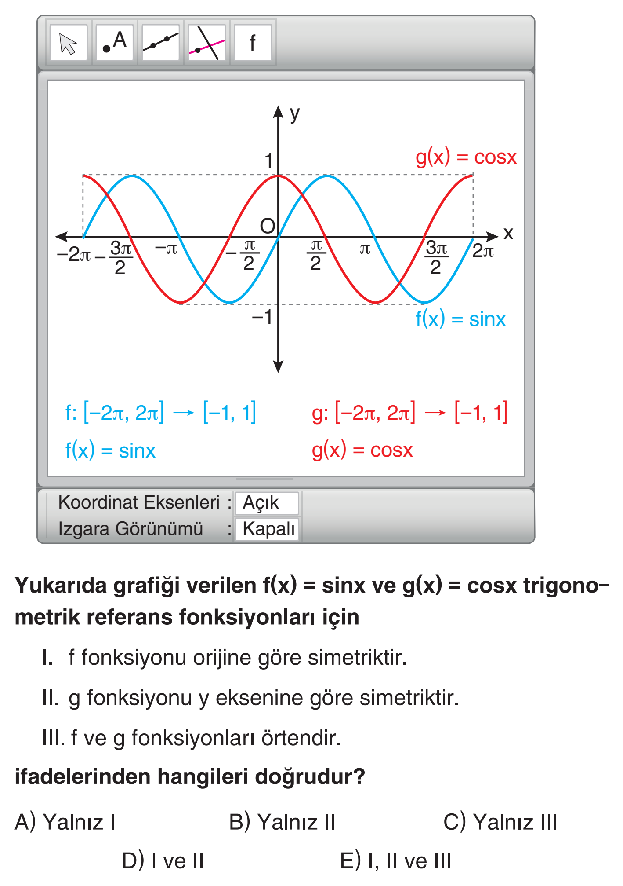
Çözüm
- $\sin$ tek fonksiyon → orijine göre simetrik (I).
- $\cos$ çift fonksiyon → y eksenine göre simetrik (II).
- $[-2\pi, 2\pi]$'de ikisi de $[-1,1]$'in her değerini alır → örten (III). I, II ve III.
Cevap: E
Soru 17Cevap: C
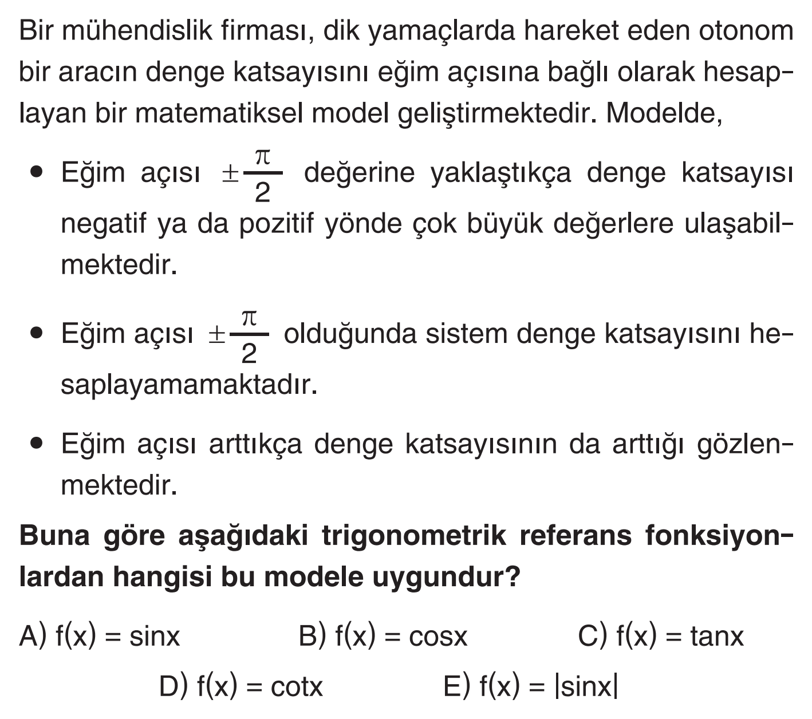
Çözüm
- $\pm\frac{\pi}{2}$'ye yaklaşınca çok büyük/çok küçük değerler → bu noktalarda dikey asimptot.
- $\pm\frac{\pi}{2}$'de tanımsız ve artan.
- $\tan x$.
Cevap: C
Soru 18Cevap: B
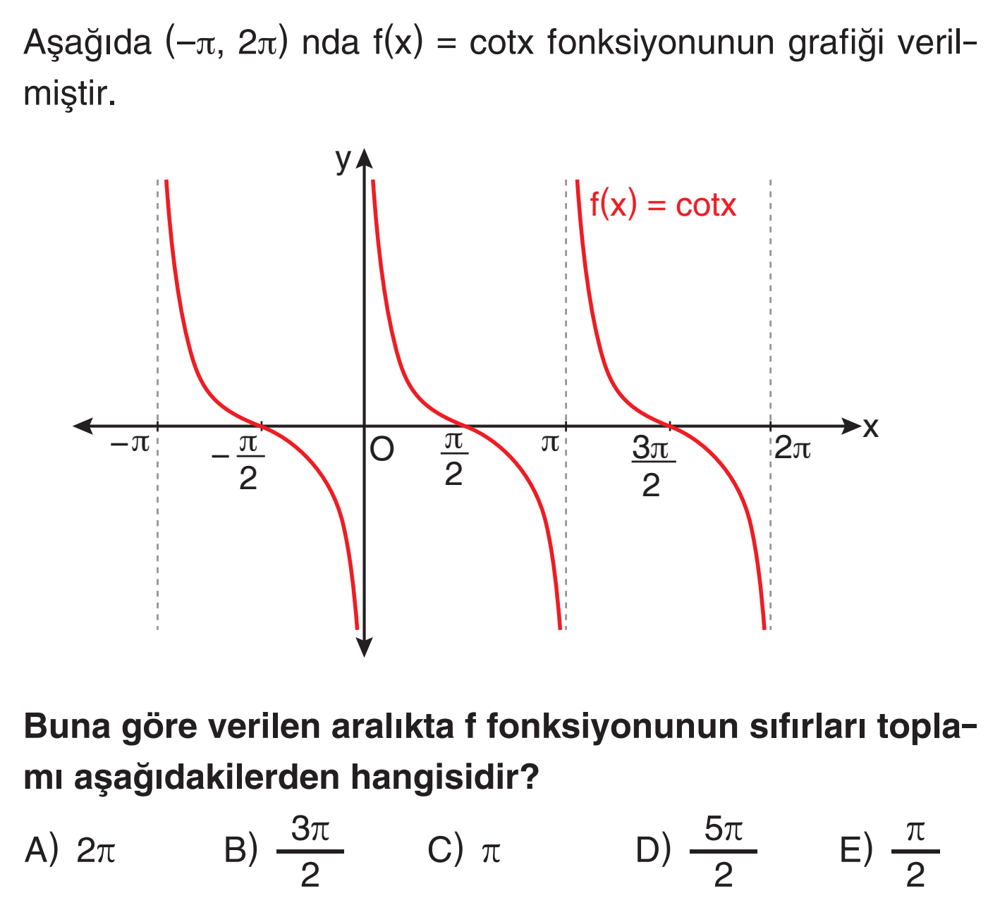
Çözüm
- $\cot x = 0$ ⇔ $x = \frac{\pi}{2} + k\pi$.
- $(-\pi, 2\pi)$'de: $-\frac{\pi}{2}, \frac{\pi}{2}, \frac{3\pi}{2}$.
- Toplam $\frac{3\pi}{2}$.
Cevap: B
Soru 19Cevap: E
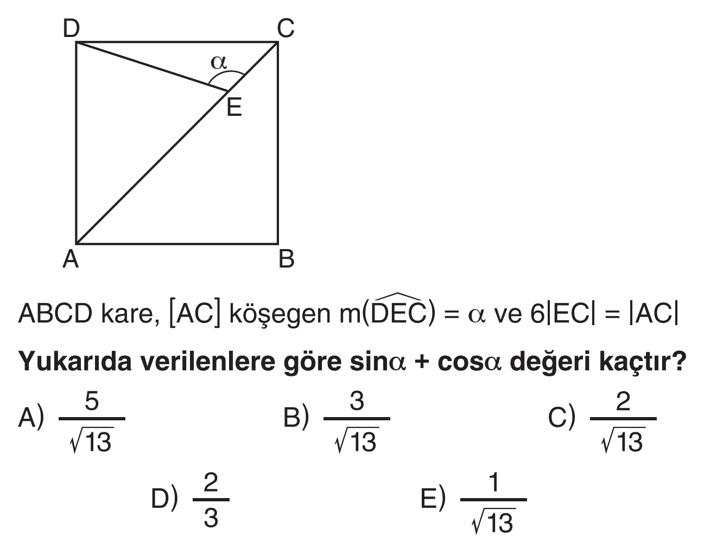
Çözüm
- Kare kenarı $s$: $|AC| = s\sqrt2$, $|EC| = \frac{s\sqrt2}{6}$, $\widehat{DCE} = 45^\circ$; kosinüs teoremiyle $|DE|^2 = \frac{13}{18}s^2$.
- $|DC|^2 = |DE|^2 + |EC|^2 - 2|DE||EC|\cos\alpha$ → $\cos\alpha = -\frac{2}{\sqrt{13}}$; buradan $\sin\alpha = \frac{3}{\sqrt{13}}$.
- $\sin\alpha + \cos\alpha = \frac{1}{\sqrt{13}}$.
Cevap: E
Soru 20Cevap: C
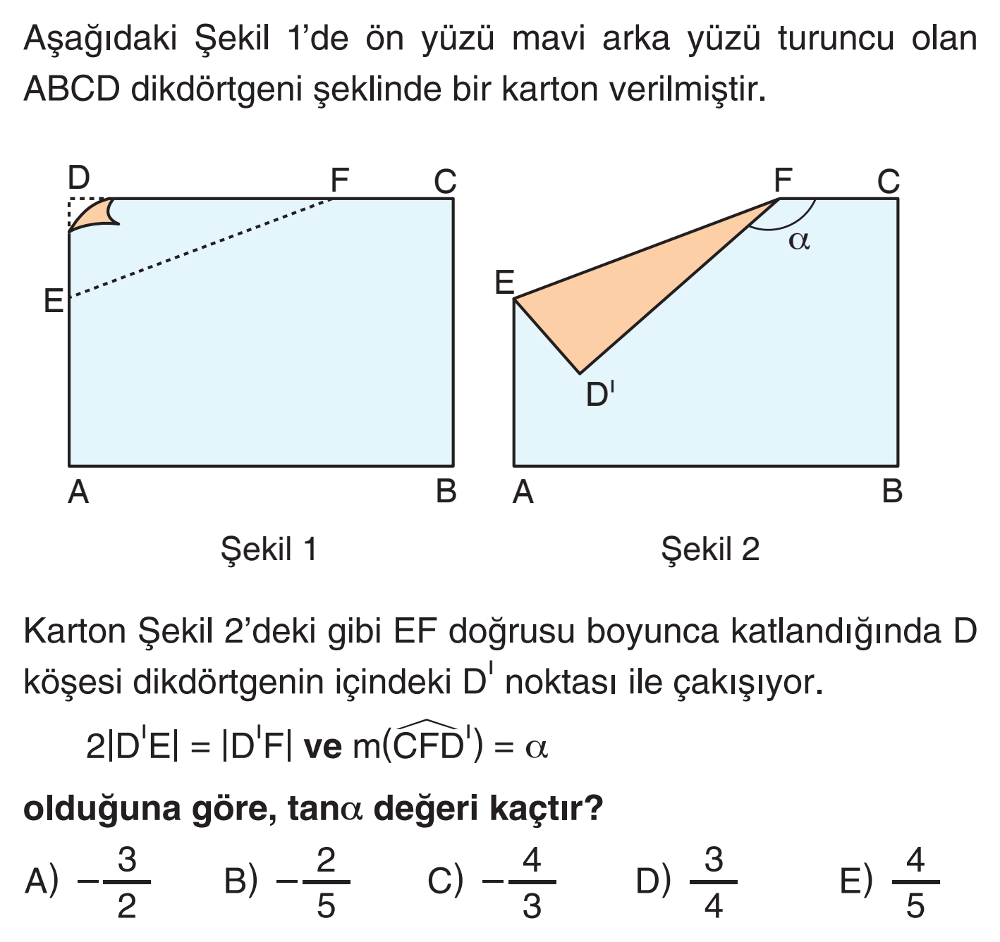
Çözüm
- Katlamada $\widehat{D} = \widehat{D'} = 90^\circ$ ve $|DE| = |D'E| = a$, $|DF| = |D'F| = 2a$; $\tan(\widehat{DFE}) = \frac12$.
- $\widehat{DFD'} = 2\theta$, $\tan2\theta = \frac{2\cdot\frac12}{1-\frac14} = \frac43$.
- $\alpha = 180^\circ - 2\theta$ → $\tan\alpha = -\frac43$.
Cevap: C